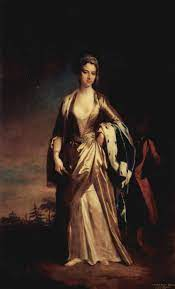

Who was Lady Mary Wortley Montagu?
Early Years
Born in London in 1689, Lady Mary Wortley Montagu was an English aristocrat. From an early age Lady Mary has always seek for a better education. She would read from her family's library and by the time she reached age 16, she had written two volumes of poetry, a short novel, and taugh herself Latin.
The Rise of Floriography in the Victorian Era
The idea behind sending cyptic messages through the arrangement and use of flowers wasn't completey new. However, the popularity in using this method to send secret sentiments grew signifigantly during the Victorian era, and its all thanks to Lady Mary Wartley Montagu.

Around 1717, Lady Montagu accompanied her husband, the English ambassador to Turkey, to Constantinople. In one of her letters to home she about a Turkish game called “sélam.” Sélam was a popular pastime where women sent messages to one another by exchanging objects that rhymed with another word. Whether intentionally or not, Montagu misunderstood sélam, romanticizing it in her embassy letters as an elaborate coded floral language used by harem women to communicate with their secret lovers
Her letters were later published in 1763, and the concept of a secret flower language quickly caught on with the European public. By the 1820s, publishers started to cash in on this growing Floriography trend, compiling lists of flowers and their secret meanings. Flowers meanings were given based on myths, traditions, medical use, color, or just the imagination of whoever was writing the dictionary.